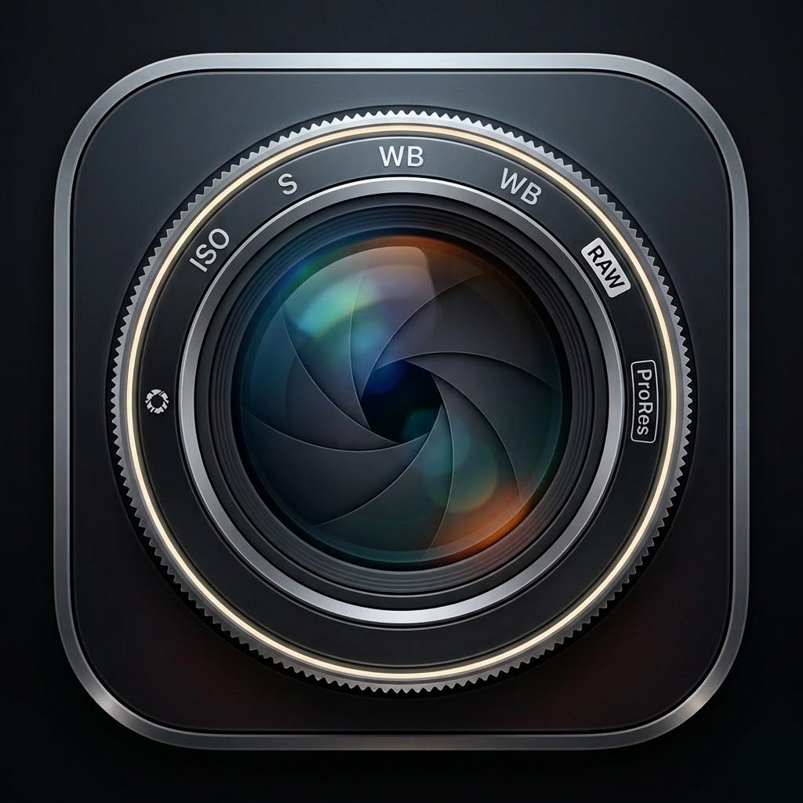
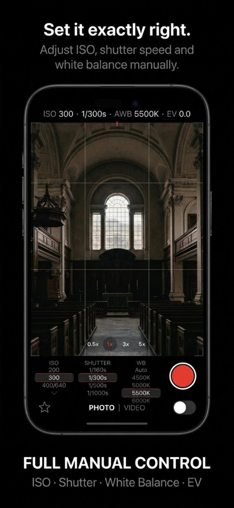
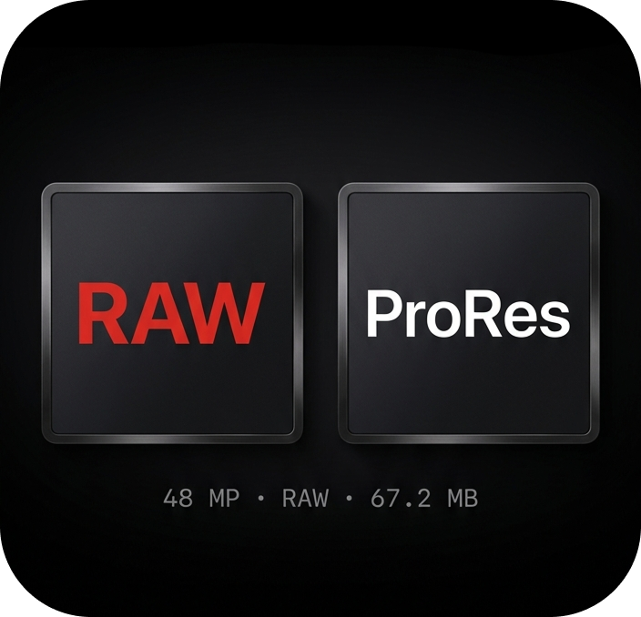
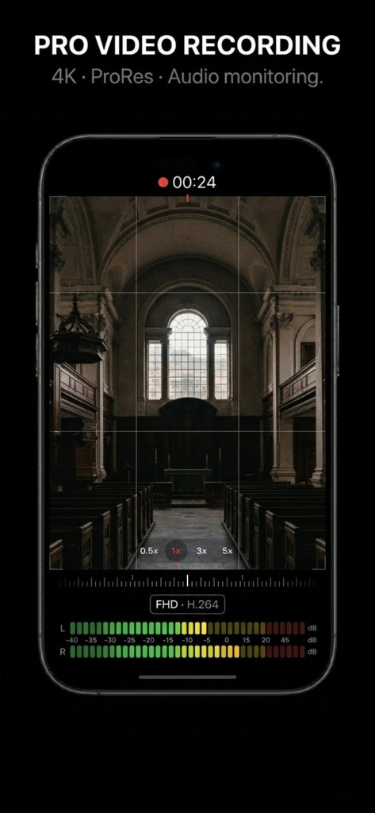
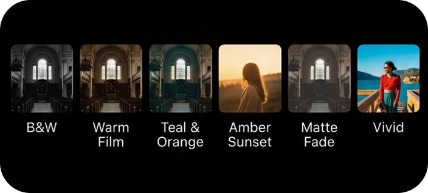
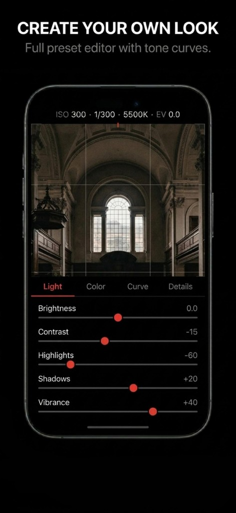
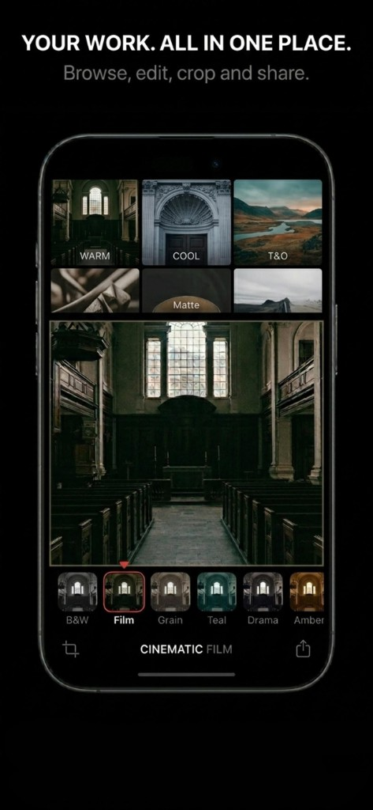

Have a question or found a bug? Fill in the form below and we'll get back to you as soon as possible.
Your mail app should open with a pre-filled message. We'll respond shortly.
Everything you get in Lens Kit Pro compared to the free version.
| Feature | Free | Pro |
|---|---|---|
| Camera | ||
| Basic photo capture | ✓ | ✓ |
| RAW photo capture (48 MP) | — | ✓ |
| Manual ISO control | — | ✓ |
| Manual shutter speed | — | ✓ |
| Manual white balance | — | ✓ |
| EV exposure control | — | ✓ |
| Grid overlay | ✓ | ✓ |
| Zoom lens switching | ✓ | ✓ |
| Video | ||
| Standard video recording | ✓ | ✓ |
| 4K video | — | ✓ |
| ProRes recording | — | ✓ |
| Audio level monitoring | — | ✓ |
| Manual video controls | — | ✓ |
| Presets & Editing | ||
| Built-in presets | 3 presets | All 6+ |
| Custom preset creation | 1 preset | ✓ |
| Tone curve editor | — | ✓ |
| Brightness / Contrast | — | ✓ |
| Highlights / Shadows | — | ✓ |
| Vibrance / Color tuning | — | ✓ |
| Media Library | ||
| Photo viewer | ✓ | ✓ |
| Crop & share | ✓ | ✓ |
| Apply presets to existing photos | — | ✓ |
| Export to gallery | ✓ | ✓ |

Full manual camera control for iPhone. Shoot RAW, record ProRes 4K, apply cinematic presets — professional photography, always with you.
What's inside
Every tool a professional needs, designed for the iPhone you already have.

Take charge of every shot. Dial in the exact ISO, shutter speed, white balance and exposure compensation — just like a professional DSLR, right on your iPhone.

Unlock the full sensor potential of your iPhone. Capture 48 MP RAW photos with maximum dynamic range and detail — ready for serious post-processing.

Record cinema-grade footage directly on iPhone. Real-time audio level meters, manual exposure in video mode, and ProRes encoding for maximum post-production flexibility.

Choose from handcrafted presets inspired by the finest film stocks and digital looks. Apply them instantly — or fine-tune every parameter to make it your own.

Go beyond pre-made filters. Adjust brightness, contrast, highlights, shadows, and vibrance. Draw your own tone curve for complete creative control.

Browse, edit, crop and share everything you've shot — without leaving the app. Apply presets to existing photos and export your favorites instantly.
Lens Kit Pro was built for people who care about their craft. Whether you're a seasoned photographer demanding RAW quality, a filmmaker who needs ProRes, or a creative who just wants their images to look exactly right — this is your tool.
Every setting is exposed. Every parameter is yours to control. No compromises, no automation you didn't ask for. Just you, your lens, and total creative freedom.
App Store Description
Take full control of your iPhone's camera. Shoot in RAW for photos and ProRes for video. Adjust every setting manually and create your own presets for any lighting situation.
Why Lens Kit Pro?
Your iPhone already has a great camera. We give you the keys to unlock its full potential. No more guessing — just pure creative control.